NetWork
网络概述
什么是计算机网络
硬件方面：通过线缆将网络设备和计算机连接起来
软件方面：操作系统，应用软件，应用程序通过通信线路互联
实现资源共享、信息传递、增加可靠性、提高系统处理能力
计算机网络发展阶段
60年代
–分组交换
70-80年代
–TCP/IP
90年代后
–Web技术
网络标准
- 标准化组织
- ISO（国际标准化组织）
- IEEE（电气电子工程师学会）
WAN与LAN
广域网（Wide-Area Network）
- 范围：几十到几千千米
- 作用：用于连接远距离计算机网络
- 典型应用：Internet
局域网（Local-Area Network）
- 范围：1km左右
- 作用：用于连接较短距离内的计算机
- 典型应用：企业网，校园网
网络拓扑结构
线缆连接计算机和网络设备的布局
- 点对点
- 两台设备之间有一条单独的连接
- 专用的广域网中电路连接的两台路由器
星型及扩展的星型
优点
易于实现
易于网络扩展
易于故障排查
缺点
中心节点压力大
组网成本高
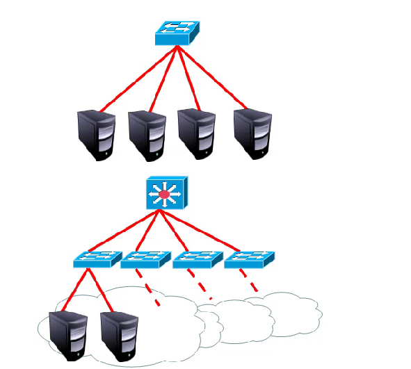
网状
一个节点与其他多个节点相连
提供冗余性和容错性
可靠性高
组网成本高
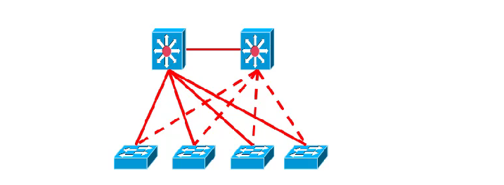
网络模型参考
OSI参考模型
OSI七层模型
分层思想
将复杂的流程分解，复杂问题简单化
更容易发现问题并针对性的解决问题
OSI参考模型
国际标准化组织（International Standard Organization, ISO）于1984年颁布了开放系统互连（Open System Interconnection, OSI）参考模型
它规定将网络分为七层，从上往下依次是：物理层、数据链路层、网络层、传输层、会话层、表示层和应用层
TCP/IP模型
- TCP/IP五层模型、OSI七层模型
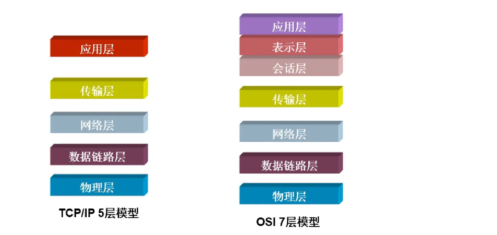
TCP/IP协议族的组成
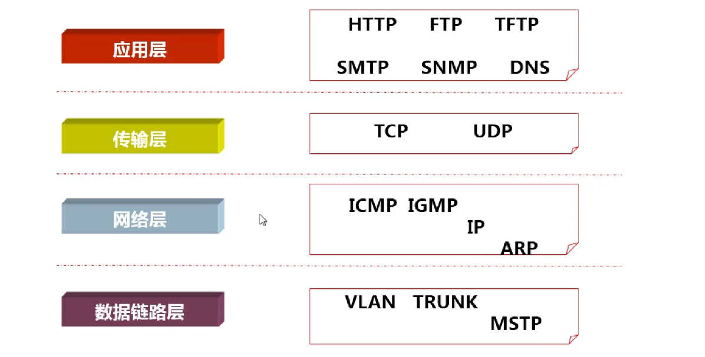
什么是协议
- 为了使数据可以在网络上从源传递到目的地，网络上所有设备需要“讲”相同的“语言”
- 描述网络通信中“语言”规范的一组规则就是协议
数据的封装与解封装
数据封装过程
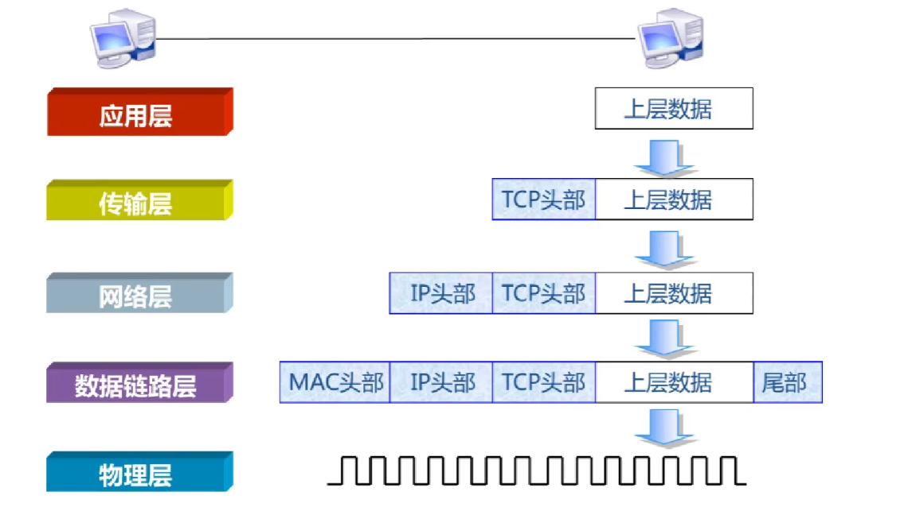
数据解封装过程
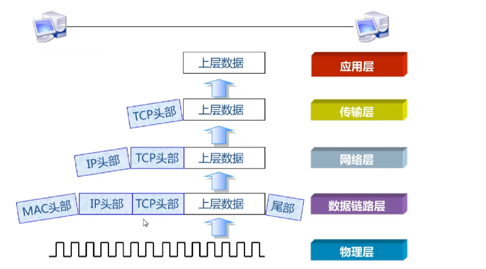
协议数据单元（PDU）
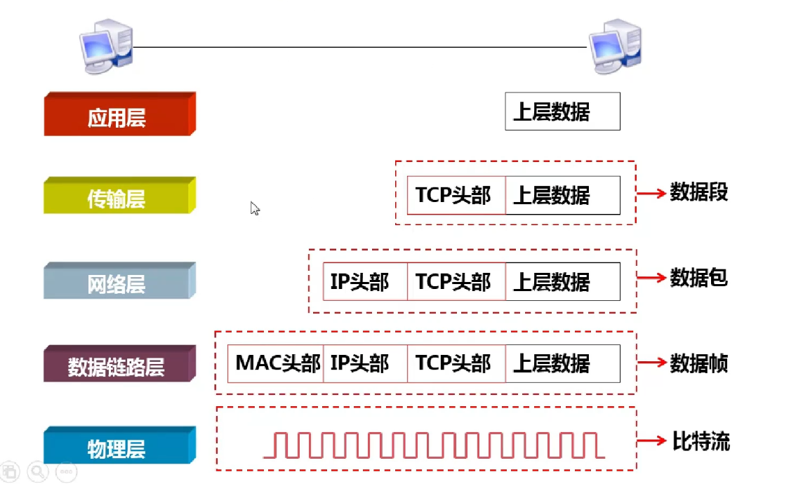
设备与层对应关系
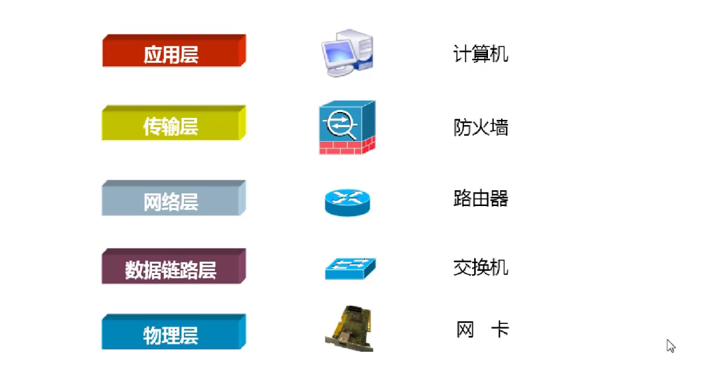
IP地址分类
IP地址的组成
IP地址由两部分组成
网络部分（NETWORK）
主机部分（HOST）
192.168.1.22
192.168.1（网络部分）.22（主机部分）
IP地址分为A、B、C、D、E五类，每一类有不同的划分规则
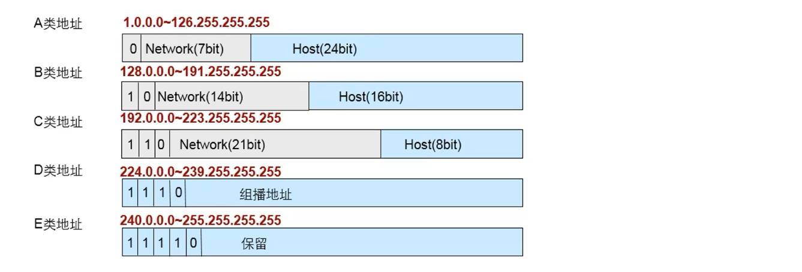
A、B、C三类IP地址组成
网络部分（NETWORK）
主机部分（HOST）
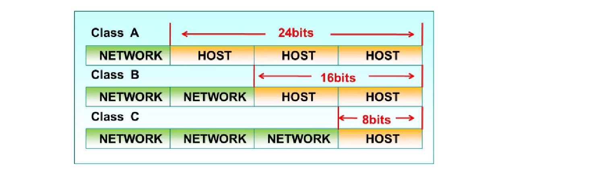
子网掩码
用来确定IP的网络地址
32个二进制位
对应IP地址的网络部分用1表示
对应IP地址的主机部分用0表示
A、B、C三类地址的默认子网掩码
A类：255.0.0.0
B类：255.255.0.0
C类：255.255.255.0
交换机命令行
交换机命令行视图
华为交换机的命令行
·用户视图：
<Huawei>
·系统视图：
<Huawei>system-view
[Huawei]·接口视图：
[Huawei]interface Ethernet 0/0/1
[Huawei-Ethernet0/0/1]interface：接口
Ethernet：接口类型
0/0/1：第一个0代表槽位号，第二个0代表子卡号，1代表接口号
·协议视图：
[Huawei]ospf
[Huawei-ospf-1]
- quit：退出，返回上一层
- return/Ctrl+z：返回用户视图
- Ctrl+]：直接退出交换机
- 可用Tab键补全命令
- ?：列出当前视图下命令
- 可简写：输入的开头位当前视图下唯一
- 若配置错误可以使用undo 后跟上一行错误命令就可删除
命令行层次关系
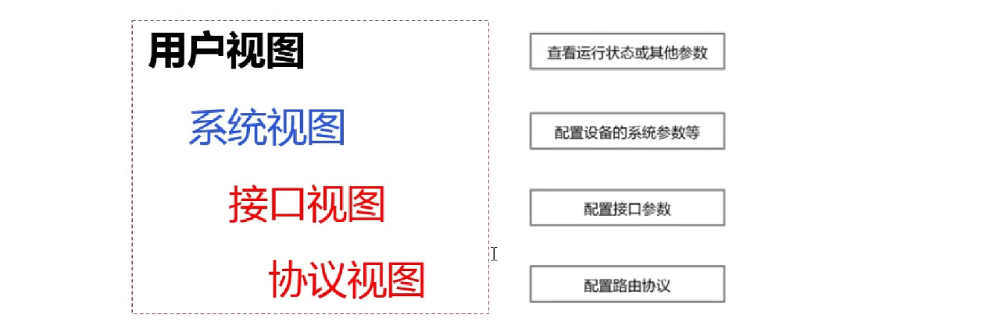
交换机配置
配置主机名
1 | <Huawei>system-view |
显示VRP版本
1 | <Huawei>display version |
查看交换机配置
1 | <Huawei>display current-configuration |
使用密码登录终端
1 | <Huawei>system-view |
保存交换机配置
- 因为不保存关机重启后配置会消失
1 | <Huawei>save |
恢复交换机出厂默认值
1 | <Huawei>reset saved-configuration |
重启
1 | <Huawei>reboot |
避免自动退出配置页面
- 空闲一段时间后（默认10分钟）重回初始化界面
- 解决方法
1 | <Huawei>sys |
关闭信息提示
1 | <Huawei>undo terminal ? |
数据链路层
以太网MAC地址
- 用来识别一个以太网上的单独的设备或一组设备
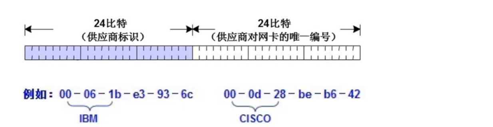
以太网帧格式
- 数据链路层的协议数据单元
- 通过ARP协议，从IP获取对方MAC地址
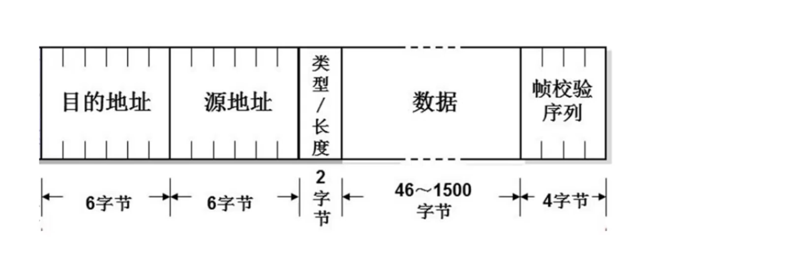
交换机工作原理
交换机的转发原理
初始状态
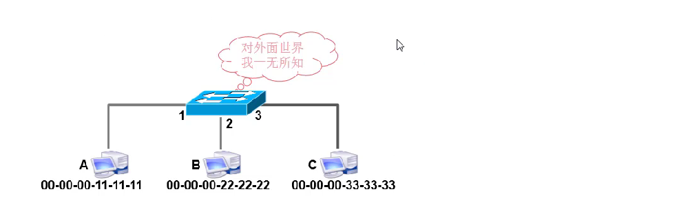
MAC地址学习
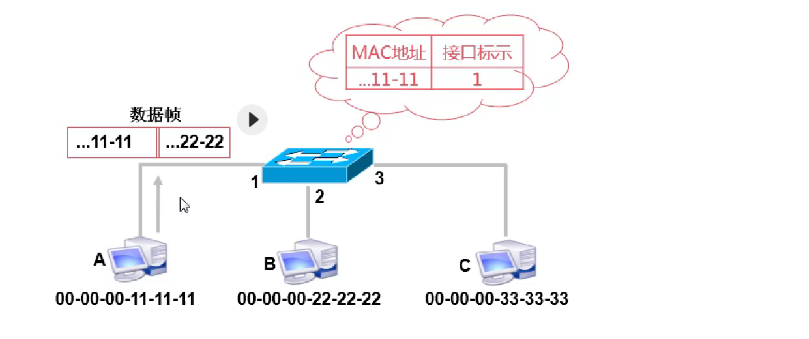
广播未知数据帧
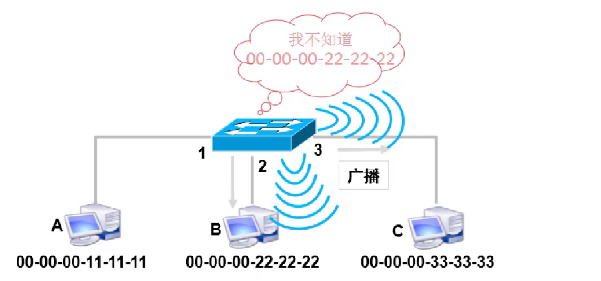
接收方回应
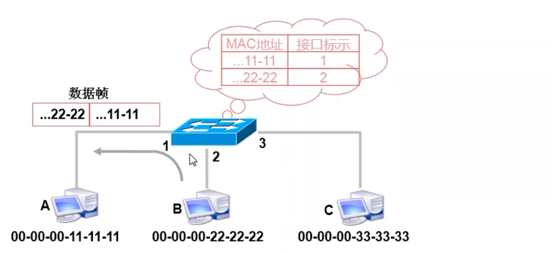
交换机实现单播通信
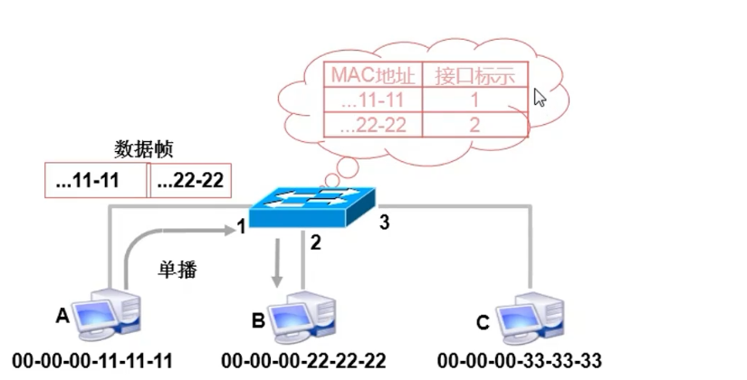
学习：通过学习数据帧的源MAC地址来形成MAC地址表
广播：若目标地址在MAC地址表中没有，交换机向该数据帧的来源端口外的其他所有端口广播该数据帧
转发：交换机根据MAC地址单播转发数据帧
更新：
交换机MAC地址的老化时间是300秒
如果发现一个帧的入端口和MAC地址表中源MAC地址的所在端口不同，交换机将MAC地址重新学习到新的端口
查看MAC地址表
display mac-address
交换机工作原理案例
主机11给主机33发数据帧
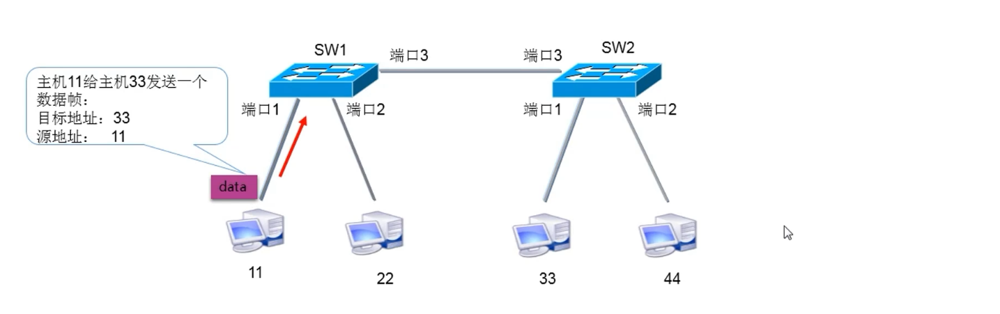
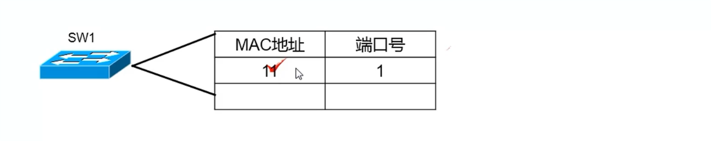
交换机SW1在接收到数据帧后，执行以下操作
- 交换机SW1查找MAC地址表
- 交换机SW1学习主机11的MAC地址
- 交换机SW1向除接收端口外所有其他端口广播
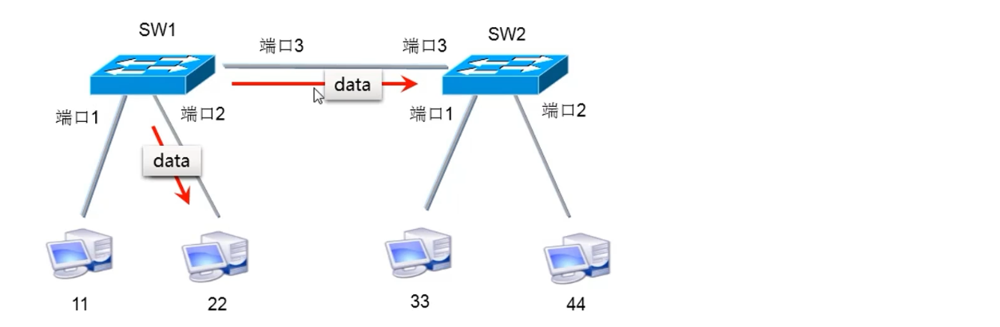

交换机SW2在接收到数据帧后，执行以下操作
- 交换机SW2查看MAC地址表
- 交换机SW2学习源MAC地址和端口号
- 交换机SW2向除接收端口外所有其他端口广播数据帧
- 主机22，查看数据帧的目标MAC地址不是自己，丢弃
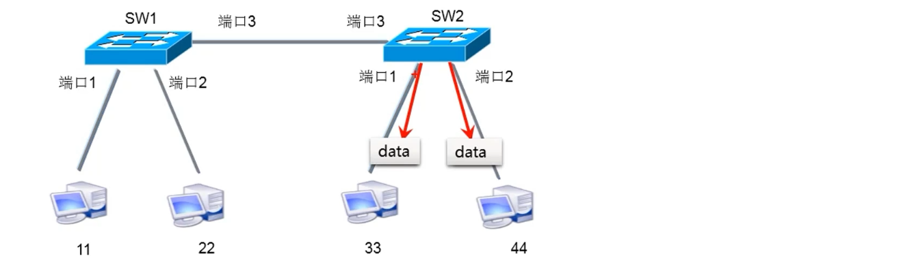
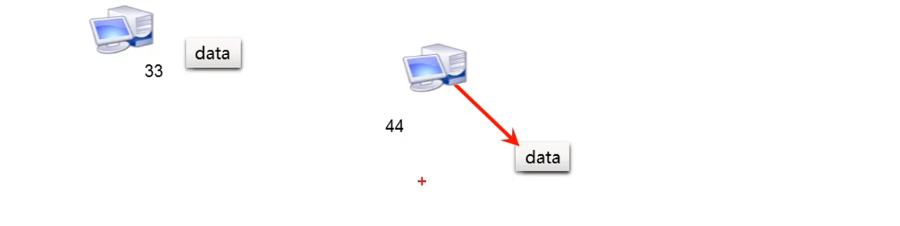
- 主机33，接收数据帧，并返回一个数据帧
- 主机44，丢弃数据帧
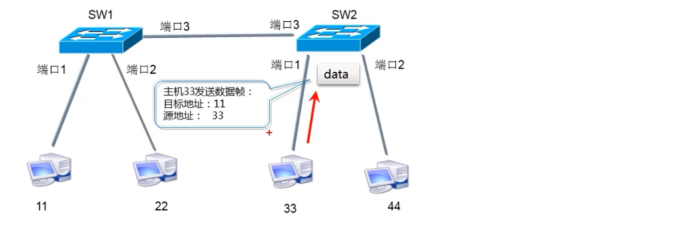
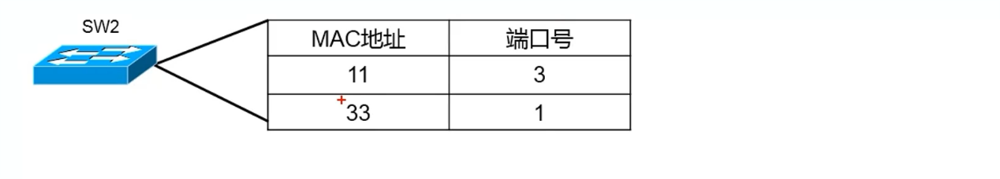
交换机SW2在接收到数据帧后，执行以下操作
- 交换机SW2学习源MAC地址和端口号
- 交换机SW2查看MAC地址表，根据MAC地址表中的条目，单播转发数据到端口3
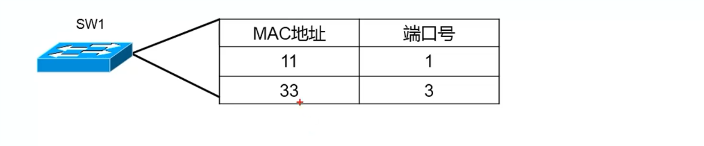
交换机SW1在接收到数据帧后，执行以下操作
- 交换机SW1学习源MAC地址和端口号
- 交换机SW1查看MAC地址表，根据MAC地址表中的条目，单播转发数据到端口1
- 主机11，收到数据帧
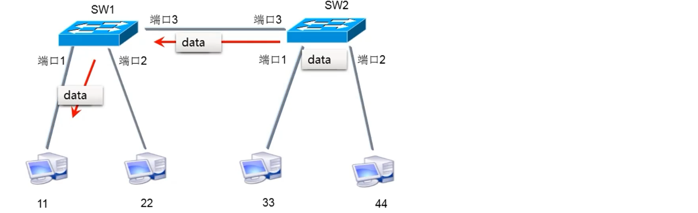
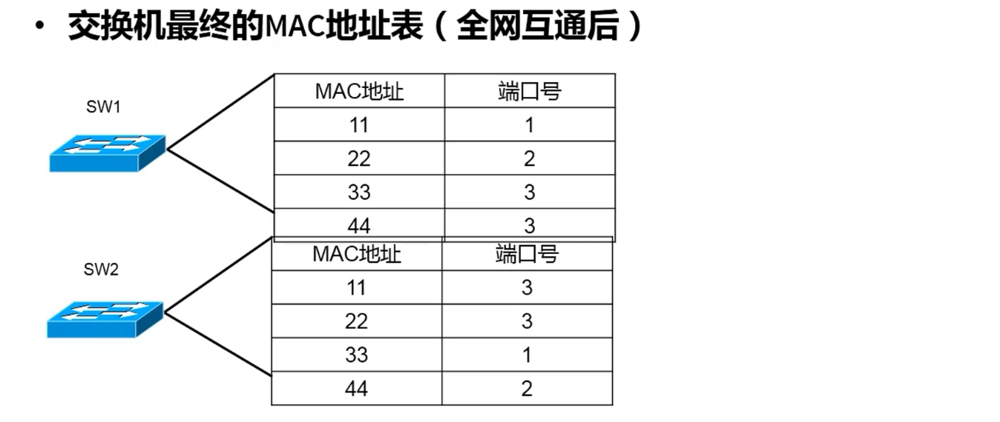
VLAN技术与应用
广播域
- 广播域指接收同样广播信息的节点的集合，如：在该集合中的任何一个节点传输一个广播帧，则所有其他能接收到这个帧的节点都被认为是该广播帧的一部分
- 交换机的所有接口默认属于同一个广播帧
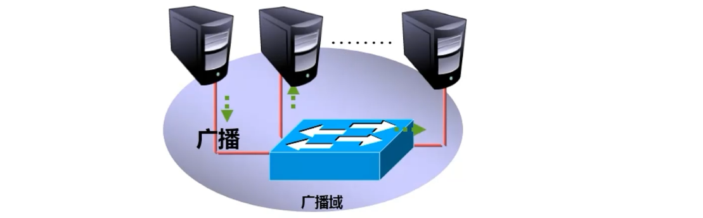
VLAN概述
什么是VLAN
- Virtual LAN（虚拟局域网）是物理设备上连接的不受物理位置限制的用户的一个逻辑组
为什么引入VLAN
交换机的所有接口默认属于同一个广播域
随着接入设备的增多，网络中广播的增多，降低了网络的效率
为了分割广播域，引入了VLAN
VLAN分割广播域
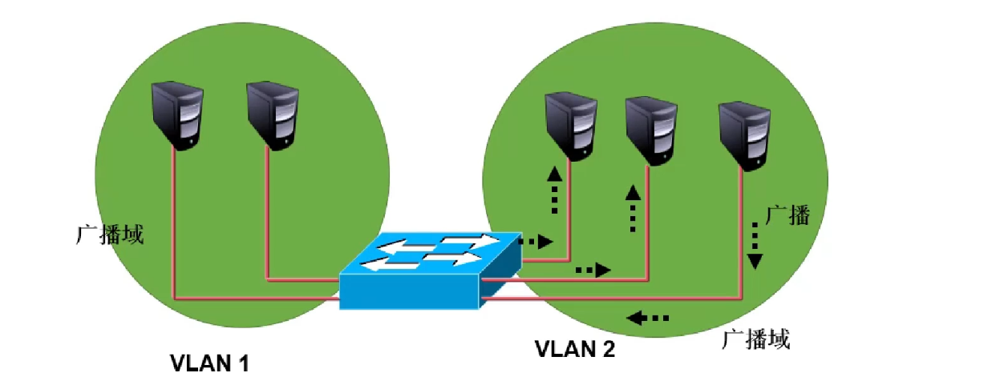
VLAN的作用
广播控制
增强安全性
提高带宽利用
降低延迟
基于接口划分的静态VLAN
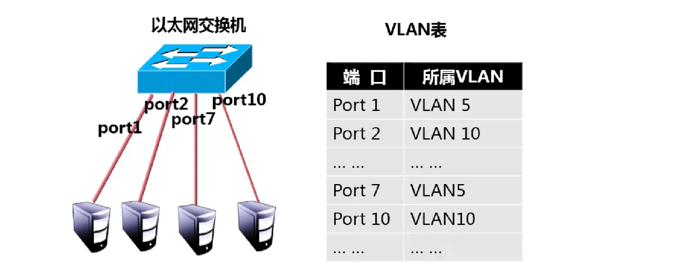
VLAN配置
配置静态VLAN的步骤
- 创建VLAN
- 将接口加入到相应的VLAN中
- 验证
创建VLAN
1 | <Huawei>system-view |
- 批量创建VLAN
1 | [Huawei]vlan batch 10 15 20 # 创建VLAN10、VLAN15、VLAN20 |
配置接口
- 将接口划分到创建的VLAN中
1 | [Huawei]interface Ethernet 0/0/3 |
查看VLAN信息
1 | [Huawei]display vlan |
创建接口组
- 可用于批量操作接口，如加入VLAN
1 | [Huawei]port-group 3 |
案例：多交换机VLAN的划分
- 通过配置多交换机实现同VLAN主机互通
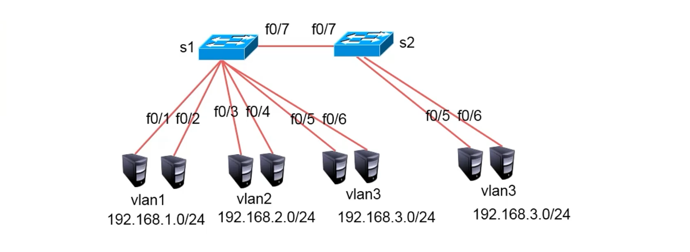
- 交换机s1
1 | <Huawei>sys |
- 交换机s2
1 | [Huawei]vlan batch 3 |
- 通过交换机s1 VLAN3中的PC ping 交换机s2 vlan3中的PC
1 | PC>ping 192.168.3.3 |
TRUNK（中继链路）
Trunk原理
- 交换机之间vlan通信
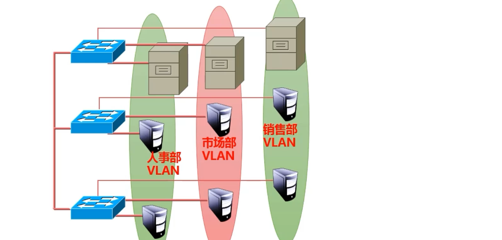
如何实现交换机之间的vlan通信
每个vlan一条线路？
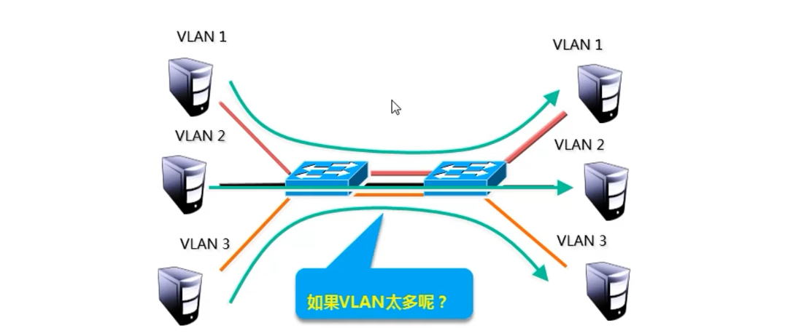
只用一条链路，那么来自多个vlan的数据如何标识
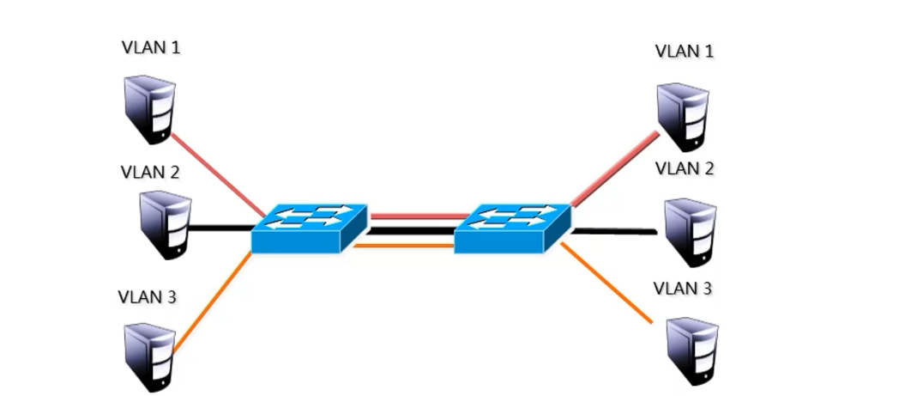
VLAN标识
- 交换机给每个去往其他交换机的数据帧打上VLAN标识
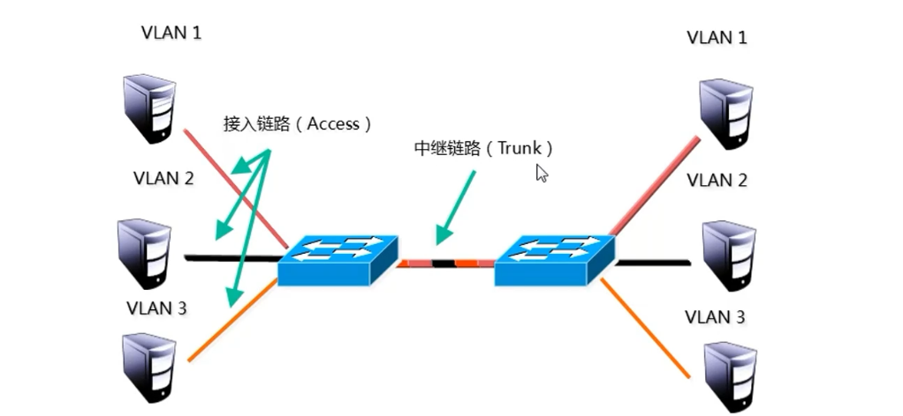
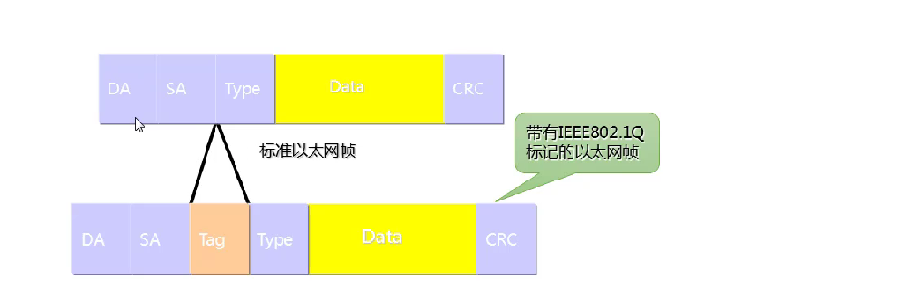
Trunk配置
进入端口修改端口链路类型
[Huawei]int E0/0/1
[Huawei-Ethernet0/0/1]port link-type trunk为已经修改为Trunk模式的端口添加允许的VLAN
[Huawei-Ethernet0/0/1]port trunk allow-pass vlan all
首先将接口还原为默认状态
[Huawei]clear configuration interface e0/0/1
[Huawei]interface Eth 0/0/1
[Huawei-Ethernet0/0/1]undo shutdown
链路聚合
创建聚合链路
进入接口，加入聚合链路
[Huawei]interface Ethernet 0/0/1
[Huawei-Ethernet0/0/1]eth-trunk 1详细步骤
1 | <Huawei>sys |
路由原理及配置
什么是路由
将数据包从一个网络发送到另一个网络
需要依靠路由器来完成
路由器只关心网络的状态，决定最佳路径
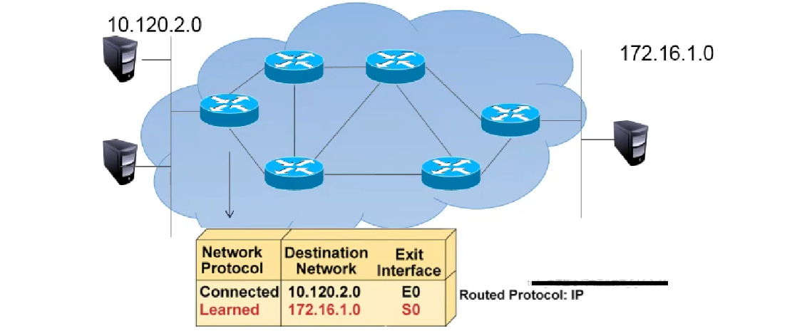
路由器可以根据路由表选择最佳路径
每个路由器都维护着一张表，这是路由器转发数据包的关键
每条路由表记录指明了：到达某个子网或主机应从路由器的哪个物理接口发送，通过此接口可到达该路径的下一个路由器的地址（或直接相连网络中的目标主机地址）
如何获取路由表
直连路由
路由设备配置IP地址后自动生效
静态路由
由管理员在路由器上手工指定
适合分支机构、家具办公等小型公司
动态路由
根据网络拓扑或流量变化，由路由器通过路由器协议自动设置
适合ISP服务商、广域网、园区网等大型网络
直连路由
- 给路由器连接PC的接口配置IP，PC网关指定该IP
1 | <Huawei>sys |
静态路由
主要特点
由管理员手工配置
通信双方的边缘路由器都需要指定，否则会导致数据包有去无回
使用ip route-static 命令
指定到达IP目的网络
基本格式
[Huawei]ip route-static 目标网络 子网掩码 下一跳
案例：配置静态路由
- 按拓扑配置接口IP地址并通过配置静态路由实现全网互通
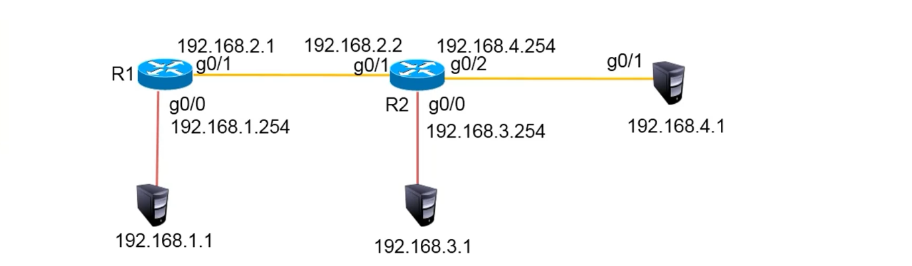
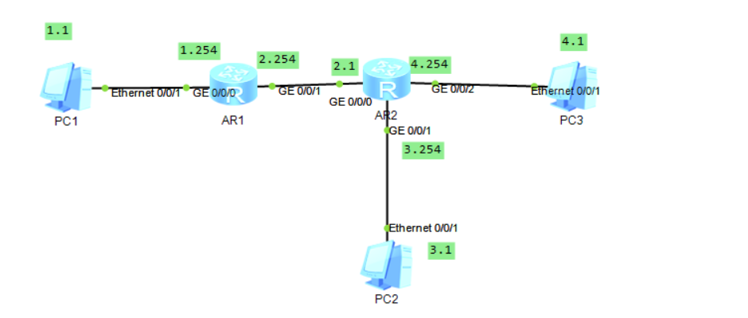
- AR1
1 | <Huawei>sys |
- AR2
1 | <Huawei>sys |
- 使用PC3 ping PC1
1 | PC>ping 192.168.1.1 |
默认路由
- 默认路由是一种特殊的静态路由
- 默认路由的目标网络为0.0.0.0 0.0.0.0 ，可以匹配任何目标地址
- 只有当从路由表中找不到任何明确匹配的路由条目，才会使用默认路由，一般在企业网关出口使用
- 不建议使用，容易造成内部的路由环路
动态路由
概述
动态路由
基于某种路由协议实现
动态路由特点
减少了管理任务
占用了网络带宽
图示：
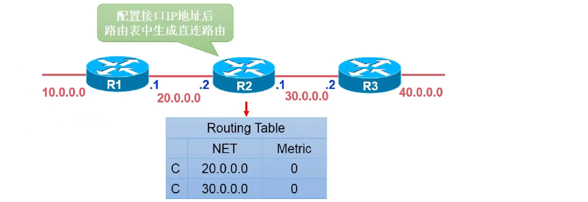
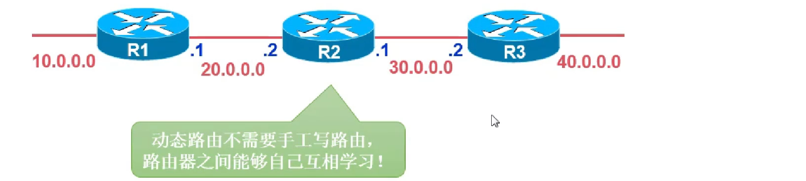
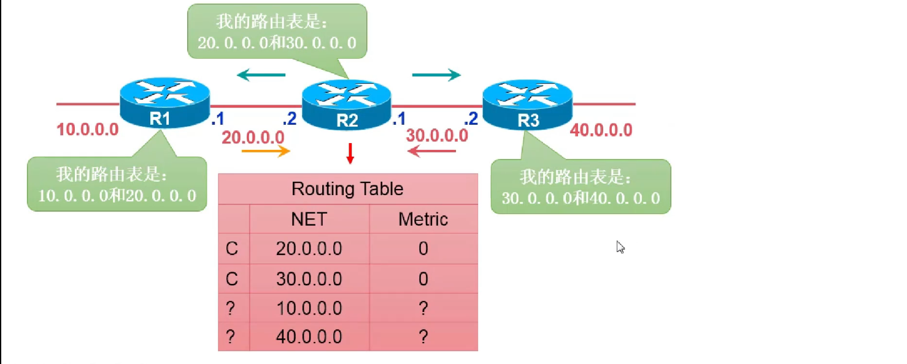
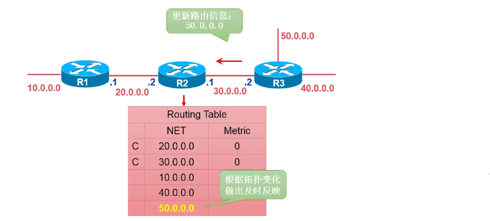
动态路由协议OSPF
全程Open Shortest Path First（开放最短路径优先）
适用大中型网络适用
OSPF区域
为了适应大型的网络，OSPF在网络内部划分多个区域
每个OSPF路由器只维护所在区域的完整链路状态
区域ID
区域ID可以表示成一个十进制的数字
也可以表示一个IP
骨干区域Area 0
负责区域间路由信息传播
OSPF配置
使用动态路由
启动OSPF路由进程并进入首个区域
[Huawei]ospf 1
[Huawei-ospf-1]area 0
[Huawei-ospf-1-area-0.0.0.0]network 192.168.0.0 0.0.0.255此处使用的是反掩码
三层交换机
什么是三次交换机
- 使用三次交换技术实现VLAN间通信
- 三层交换=二层交换+三层转发
虚拟接口概述
- 三层交换机VLAN间通信的转发过程
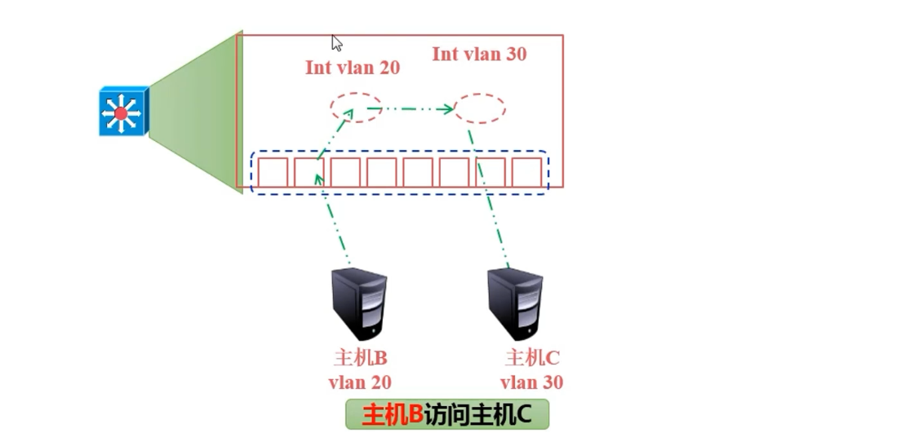
在三层交换机上配置VLAN接口为虚拟接口
使用Vlanif（VLAN接口）实现VLAN间路由
VLAN接口的引入使得应用更加灵活
[Huawei]interface Vlanif VLAN interface number
[Huawei]display ip interface brief
三层交换机配置思路
- 确定哪些VLAN需要配置网关
- 如果三层交换机上没有VLAN则创建它
- 为每个VLAN创建相关的虚拟接口
- 给每个VLAN虚拟接口配置IP地址
- 如果需要，配置三层交换机的动态或静态路由
案例：三层交换机VLAN通信
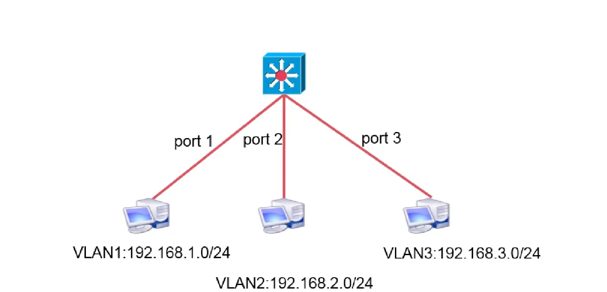
- 三层交换机配置
1 | <Huawei>sys |
综合组网
三层交换机配置
- 更合理的使用三层交换机
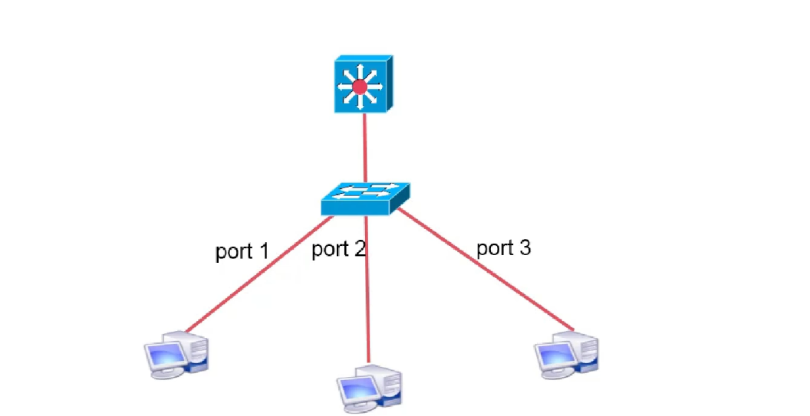
传输层概述
传输层作用
- 网络层提供点到点的连接
- 传输层提供端到端的连接
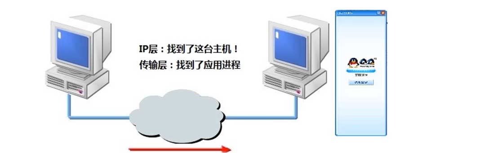
传输层协议
TCP（Transmission Control Protocol）
传输控制协议
可靠的、面向连接的
传输效率低
UDP（User Datagram Protocol）
用户数据报协议
不可靠的、无连接的
传输效率高
TCP协议
TCP的封装格式（报文）
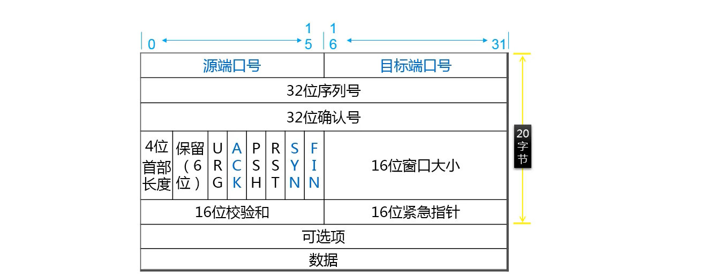
TCP的连接与断开
TCP的连接-三次握手
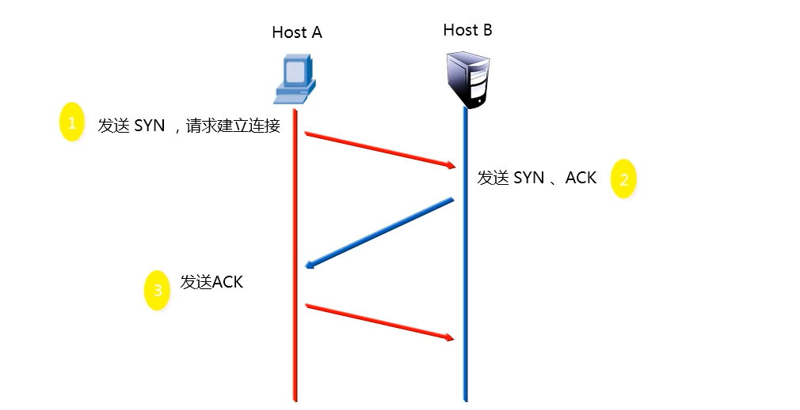
TCP的四次断开
TCP应用
| 端口 | 协议 | 说明 |
|---|---|---|
| 21 | FTP | 文件传输协议，用于上传下载 |
| 22 | SSH | 用于远程登陆，管理网络设备 |
| 25 | SMTP | 简单邮件传输协议，用于发送邮件 |
| 53 | DNS | 域名服务 |
| 80 | HTTP | 超文本传输协议 |
| 443 | HTTPS | 超文本传输协议，附带安全加密功能 |
UDP协议
UDP封装格式（报文）
UDP应用
| 端口 | 协议 | 说明 |
|---|---|---|
| 69 | TFTP | 简单文件传输协议 |
| 53 | DNS | 域名服务 |
| 123 | NTP | 网络时间协议 |
ACL简介与配置
ACL作用
- 访问控制列表（Access Control List, ACL）是应用在路由器接口的指令（即规则）
- 读取第三、第四层报文头信息
- 根据预先定义好的规则对报文进行过滤
ACL的主要类型
| 分类 | 编号范围 | 参数 |
|---|---|---|
| 基本ACL | 2000-2999 | 源IP地址 |
| 高级ACL | 3000-3999 | 源IP地址、目的IP地址、端口、协议 |
ACL规则
- 每个ACL可以包含多个规则，路由器根据规则对数据流量进行过滤，匹配即停止
基本ACL概述
- 基于源IP地址过滤数据包
- 列表号是2000-2999
基本ACL配置案例
- 需求描述
- 禁止PC1访问服务器Server1
- 允许其他所有的访问流量
- AR1配置
1 | <Huawei>sys |
测试
PC1不能ping通Server1
PC2可以ping通Server1
查看ACL
display acl 2000 或者 display acl all
案例
- 禁止PC2与PC1通信，而允许所有其他的流量
- R1
1 | [Huawei]acl 2000 |
案例
- 允许主机PC2与PC1互通，而禁止其他设备访问PC1
- R1
1 | [Huawei]acl 2000 |
ACL高级配置
高级ACL
- 基于源IP地址、目的IP地址、源端口、目的端口、协议过滤数据包
- 列表号是3000-3999
高级ACL配置案例
- 需求描述
- 允许Client1访问Server1的Web服务
- 允许Client1访问网络192.168.2.0/24
- 禁止Client1访问其他网络
- AR1
1 | <Huawei>sys |
- AR2
1 | <Huawei>sys |
- AR3
1 | <Huawei>sys |
查看ACL
display acl 3000 或 display acl all
测试
Client1可以访问Server1的Web服务
Client1可以ping通网络192.168.2.0/24
Client1不能ping通网络192.168.3.0/24
NAT概述
NAT的作用
NAT
Network Address Translation，网络地址转换
作用
通过将内部网络的私有IP转换为全球唯一的公网IP，使内部网络可以连接到外部网络
私有IP分类
- A类：10.0.0.0~10.255.255.255
- B类：172.16.0.0~172.31.255.255
- C类：192.168.0.0~192.168.255.255
NAT的特性
NAT的优点
节省公有合法IP地址
处理地址叠加
安全性
NAT的缺点
延迟增大
配置和维护的复杂性
NAT实现方式
- 静态转换
- Easy IP
NAT工作过程
- 静态
- Easy IP
静态NAT
概述
- 讲台转换是指将内部网络的私有地址转换为共有地址时，IP地址的对应关系是确定的
- 静态转换是一对一的转换
- 静态转换时双向的
静态NAT配置
- 将内部地址10.1.1.11、10.1.1.12静态转换为公网地址200.1.1.11、200.1.1.12，以便访问外网主机或被外网访问
- in g0/0/2 # 连接外网的接口
nat static global 200.1.1.11 inside 10.1.1.11
nat static global 200.1.1.12 inside 10.1.1.12
案例：静态配置NAT
- 在R1上配置静态NAT使192.168.2.1转换为100.0.0.2，192.168.2.2转换为100.0.0.3，实现外部访问
- R1
1 | <Huawei>sys |
Easy IP
概述
- Easy IP允许将多个内部地址映射到网关出接口
- Easy IP是多对一的转换
- Easy IP是单向的
Easy IP配置
- 公司路由器外部接口G0/0/2是公网IP，如何使内部网络10.1.1.0利用NAT上网
- acl 2000
rule 5 permit source 10.1.1.0 0.0.0.255
in g0/0/2
nat outbound 2000
案例：Easy IP配置
- 在R1配置路由器使企业内网192.168.2.0/24复用G0/0/1接口的IP，实现外部网络的访问
- R1
1 | <Huawei>sys |
VRRP概述
单网关的缺陷
- 单网关场景分析
- 当网关路由器出现故障时，本网段内以该设备为网关的主机都不能与Internet进行通信
多网关存在的问题
通过部署多网关的方式实现网关的备份
存在的问题
网关直接IP地址冲突
主机会频繁切换网络出口
什么是VRRP
- VRRP是虚拟路由冗余协议
- VRRP能够在不改变组网的情况下，从多台网关设备里产生一个虚拟路由器，通过配置虚拟路由器的IP地址为网关，实现网关的备份
VRRP应用
VRRP组成员角色
主（Master）路由器
备份（Backup）路由器
虚拟（Virtual）路由器
- VRRP原理

VRRP配置
三层交换机配置
SW1
int vlan 1
ip add 192.168.1.1 24
vrrp vrid 1 virtual-ip 192.168.1.254 # 1为标识符vrrp vrid 1 priority 105
SW2
int vlan 1
ip add 192.168.1.2 24
vrrp vrid 1 virtual-ip 192.168.1.254vrrp vrid 1 priority 100
查看VRRP信息
dis vrrp bri
案例：三层交换机配置VRRP
- 在三层交换机配置VRRP后使其产生一个虚拟IP地址192.168.1.254为内部主机的网关
- AR1
1 | <Huawei>sys |
- MS1
1 | <Huawei>sys |
- MS2
1 | [Huawei]vlan batch 3 |
企业级网络部署
分析与升级
目前网络环境
公司介绍
一家网络服务的IT公司
公司位于北京有若干服务器
通过NAT技术将业务服务器与Internet互联
目前网络拓扑结构
- 现有网络
目前网络技术
目前网络环境已拥有技术
默认路由：实现到互联网数以万计网络访问的简化配置
静态路由：路由器与三层交换机间配置静态路由
NAT：将业务服务器与Internet互联
问题分析
现有网络环境问题分析
接入层交换机只与同一个三层交换机相连，存在单点故障而影响网络通信
互联网连接单一服务商
网络规模不断增加，静态路由缺乏灵活
项目需求
现有网络需求：
为了提高主机对公司网络服务访问的可靠性，需要很多冗余技术
为了保证局域网络高可靠使用了网络拓扑
为了保证服务器不会因为使用单一网关而出现单点失败影响网络通信选哟网关冗余
为了保证到互联网的高可用接入需使用了冗余互联网连接
项目技术
基于项目的需求，解决方案中需要增加如下技术：
OSFP路由协议：实现网络路径的自主学习
VRRP：实现冗余网关
链路聚合：实现增加链路可靠
项目拓扑
- 重新规划后的网络拓扑
接入层配置
设备命名
sysname TEDU_TEDU_BJ_NSD_FLOOR03_DEV12
规划VLAN
规划IP地址
VLAN 10 192.168.10.0/24
VLAN 20 192.168.20.0/24
······
接入层
每台交换机分别创建4个VLAN
终端设备加入各自VLAN
所有交换机直接的链路配置为TRUNK
1 | vlan batch 10 20 30 40 |
汇聚层配置
虚拟接口IP地址
VLAN10 192.168.10.0/24
VLAN20 192.168.20.0/24
VLAN30 192.168.30.0/24
VLAN40 192.168.40.0/24
至核心层接口IP地址
192.168.50.0/24
192.168.60.0/24
192.168.70.0/24
192.168.80.0/24
1 | vlan batch 10 20 30 40 |
核心层配置
OSPF
宣告内网直连网段
通告默认路由
ip route-static 0.0.0.0 0 100.0.0.1
ospf
default-route-advertise
开启NAT功能
开启NAT
acl 2000
rule 5 permit source any
in g0/0/2
nat outbound 2000
- AR1
1 | # 给端口配置IP |
- LSW5
1 | vlan batch 50 60 |
- 模拟外网的交换机配置IP
SSH远程登录
- 在路由器开启远程服务
1 | aaa |
- 从其他设备登录
1 | ssh client first-time enable # 初次连接以此命令做准备 |
交换机开启ssh服务
需要多输入以下命令，其他一致
1 | ssh user test authentication-type password |
VRRP负载均衡
- 主备设置
- vlan 10 20 MS1为主
- vlan 30 40 MS2为主
1 | in vlan 10 |
VRRP接口跟踪
- 接口跟踪
- 当三层交换机与路由器之间的线断了，vrrp并不会放弃master身份
- 使用接口跟踪可以自动的技术调整优先级
1 | in vlan 10 |
加强同层交换机之间的链路
1 | clear configuration interface g0/0/5 |